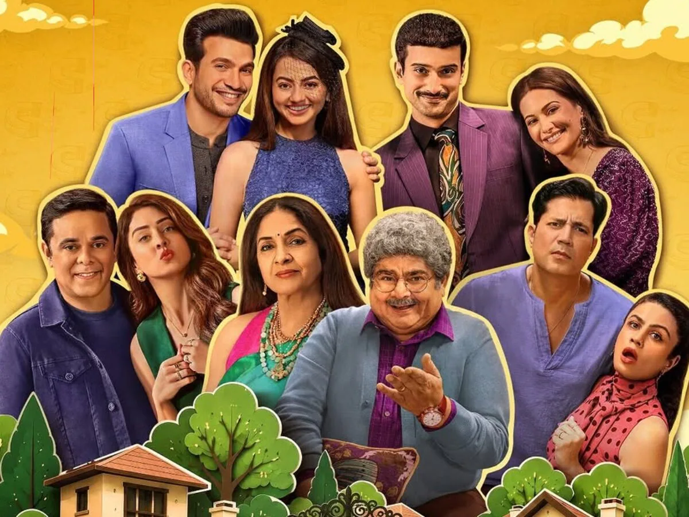

"When opposites attract, chaos and heart follow."
Streaming on Netflix, Chumbak is a 2026 Hindi-language comedy-drama that follows an unlikely ensemble of quirky neighbors living in a bustling Mumbai housing society. Despite their wildly clashing personalities, generational gaps, and daily eccentricities, an unexpected turn of events forces them to stick together—turning everyday misunderstandings into heartfelt bonds, laughter, and shared resilience.